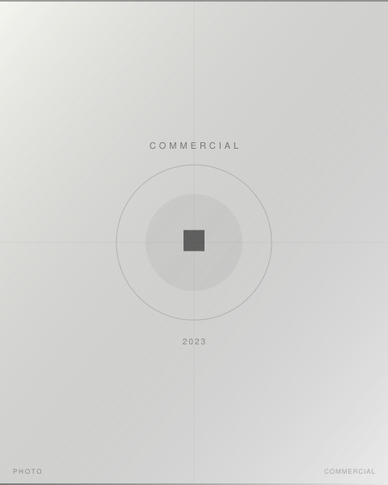

ファッション系エディトリアル作品撮り。衣装のテクスチャーと光との関係を丁寧に設計し、服が持つ空気感を静止画に変換する。白ホリスタジオを主体とし、衣装・ヘアメイク・モデルとのコラボレーションで構成した組み写真。
担当：スチール撮影 / ライティング設計 / デジタル現像
Leica SL2, APO-SUMMICRON-SL 75mm f/2 ASPH.
- Photographer
- 森川亮太 (M.RYOHTA / @m_ichirinka)

ファッション系エディトリアル作品撮り。衣装のテクスチャーと光との関係を丁寧に設計し、服が持つ空気感を静止画に変換する。白ホリスタジオを主体とし、衣装・ヘアメイク・モデルとのコラボレーションで構成した組み写真。
担当：スチール撮影 / ライティング設計 / デジタル現像
Leica SL2, APO-SUMMICRON-SL 75mm f/2 ASPH.